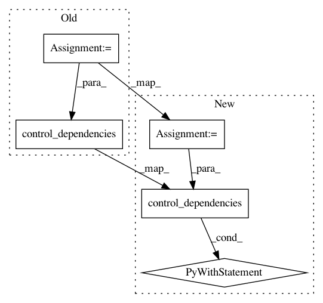

da73514fe9af58f35dc62a5c0c91ab60fd55f134,tensorforce/core/models/model.py,Model,api_act,#Model#,765
Before Change
return tf.group(*assignments)
with tf.control_dependencies(control_inputs=util.flatten(xs=actions)):
reversed_variable_noise = self.cond(
pred=skip_variable_noise, true_fn=no_variable_noise,
false_fn=reverse_variable_noise
)
// Update states/internals/actions buffers
def update_buffers():
operations = list()
buffer_index = self.buffer_index[parallel]
for name in self.states_spec:
operations.append(
self.states_buffer[name].scatter_nd_update(
indices=[(parallel, buffer_index)], updates=states[name]
)
)
for name in self.internals_spec:
operations.append(
self.internals_buffer[name].scatter_nd_update(
indices=[(parallel, buffer_index)], updates=internals[name]
)
)
for name in self.actions_spec:
operations.append(
self.actions_buffer[name].scatter_nd_update(
indices=[(parallel, buffer_index)], updates=actions[name]
)
)
// Increment buffer index
with tf.control_dependencies(control_inputs=operations):
one = tf.constant(value=1, dtype=util.tf_dtype(dtype="int"))
incremented_buffer_index = self.buffer_index.scatter_nd_add(
indices=[(parallel,)], updates=[one]
)
with tf.control_dependencies(control_inputs=(incremented_buffer_index,)):
return tf.no_op()
with tf.control_dependencies(control_inputs=(reversed_variable_noise,)):
updated_buffers = self.cond(
pred=independent, true_fn=tf.no_op, false_fn=update_buffers
)
After Change
assignments.append(variable.assign_sub(delta=noise, read_value=False))
return tf.group(*assignments)
reversed_variable_noise = self.cond(
pred=skip_variable_noise, true_fn=no_variable_noise,
false_fn=reverse_variable_noise
)
// Update states/internals/actions buffers
with tf.control_dependencies(control_inputs=(reversed_variable_noise,)):
def update_buffers():
operations = list()
buffer_index = self.buffer_index[parallel]
for name in self.states_spec:
operations.append(
self.states_buffer[name].scatter_nd_update(
indices=[(parallel, buffer_index)], updates=states[name]
)
)
for name in self.internals_spec:
operations.append(
self.internals_buffer[name].scatter_nd_update(
indices=[(parallel, buffer_index)], updates=internals[name]
)
)
for name in self.actions_spec:
operations.append(
self.actions_buffer[name].scatter_nd_update(
indices=[(parallel, buffer_index)], updates=actions[name]
)
)
// Increment buffer index
with tf.control_dependencies(control_inputs=operations):
one = tf.constant(value=1, dtype=util.tf_dtype(dtype="int"))
incremented_buffer_index = self.buffer_index.scatter_nd_add(
indices=[(parallel,)], updates=[one]
)
with tf.control_dependencies(control_inputs=(incremented_buffer_index,)):
return tf.no_op()
updated_buffers = self.cond(
pred=independent, true_fn=tf.no_op, false_fn=update_buffers
)
// Return timestep
with tf.control_dependencies(control_inputs=(updated_buffers,)):
// Function-level identity operation for retrieval (plus enforce dependency)
for name, spec in self.actions_spec.items():
actions[name] = util.identity_operation(
In pattern: SUPERPATTERN
Frequency: 6
Non-data size: 5
Instances
Project Name: reinforceio/tensorforce
Commit Name: da73514fe9af58f35dc62a5c0c91ab60fd55f134
Time: 2019-01-18
Author: alexkuhnle@t-online.de
File Name: tensorforce/core/models/model.py
Class Name: Model
Method Name: api_act
Project Name: reinforceio/tensorforce
Commit Name: 0655e4a2bd89ccc20f4f1157f65b3e5a61f140e1
Time: 2019-01-20
Author: alexkuhnle@t-online.de
File Name: tensorforce/core/optimizers/tf_optimizer.py
Class Name: TFOptimizer
Method Name: tf_step
Project Name: tensorflow/kfac
Commit Name: 19f17e68bd591d4aa13a535ef857b2ae56d1a10a
Time: 2019-08-13
Author: no-reply@google.com
File Name: kfac/python/ops/optimizer.py
Class Name: KfacOptimizer
Method Name: apply_gradients
Project Name: reinforceio/tensorforce
Commit Name: 39573ca03c7f1a268b39df332f68805f642bf7d0
Time: 2019-11-17
Author: alexkuhnle@t-online.de
File Name: tensorforce/core/models/tensorforce.py
Class Name: TensorforceModel
Method Name: tf_core_update
Project Name: HyperGAN/HyperGAN
Commit Name: 828381fe30ae454cda23b971991861346afd1b97
Time: 2018-11-02
Author: martyn@255bits.com
File Name: hypergan/optimizers/curl_optimizer.py
Class Name: CurlOptimizer
Method Name: apply_gradients
Project Name: reinforceio/tensorforce
Commit Name: e26c77a5caff9b47404eca5ff6f50e8c5106719c
Time: 2019-08-31
Author: alexkuhnle@t-online.de
File Name: tensorforce/core/memories/queue.py
Class Name: Queue
Method Name: tf_successors